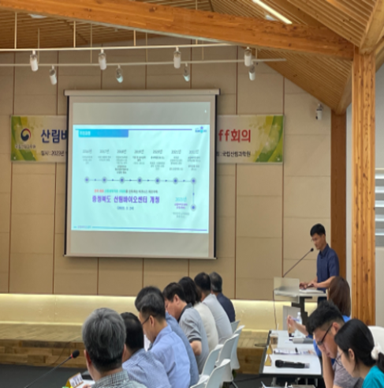
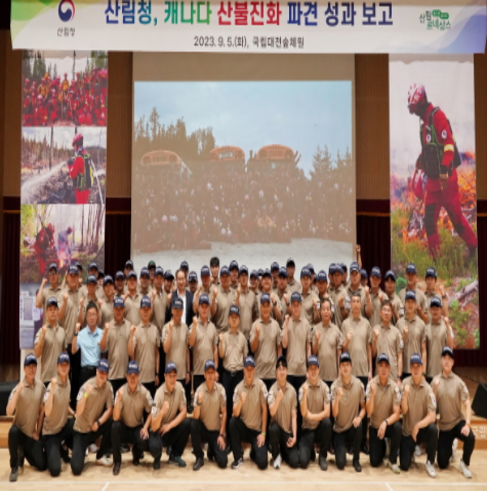
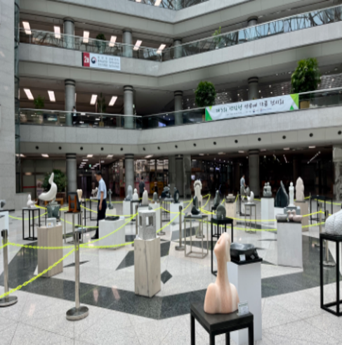
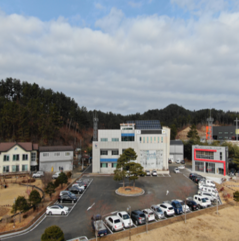

-
사람이 중심이 되는 따뜻하고
행복한 세상을 만드는데
산림청이 앞장서겠습니다.
-
사람이 중심이 되는 따뜻하고
행복한 세상을 만드는데
산림청이 앞장서겠습니다.
-
사람이 중심이 되는 따뜻하고
행복한 세상을 만드는데
산림청이 앞장서겠습니다.


산림청 알림
안녕하십니까?
신림청장 남성현입니다.
청장소개
청장과의 대화
주요 선진국
산림·임업 정책동향
국제기구
정책동향
NEWS
-

국립산림과학원, 자생 산림자원 활용방안 마련을 위한 연구협의체 구성
국립산림과학원, 자생 산림자원 활용방안 마련을 위한 연구협의체 구성 - 산림생명자원을 통한 지역특성화 연구협의체 구성, 공동협력 추진 나서 산림청 국립산림과학원(원장 배재수)은 1일, 국립산림과학원 연구개발 성과의 조기 산업화 추진을 위해 「산림바이오산업화연구협의체」를 구성하고, 관련기관과 소통 및 협업 논의에 착수했다고 밝혔다. 산림바이오산업화연구협의체는 산림자원의 조성 및 관리에 관한 법률(제42조)과 임업 및 산촌진흥에 관한 법률(제8조)에 근거하여 미래 유망산림자원을 개발하고, 4대 권역별 스마트 산림바이오센터를 통한 바이오산업계 지원을 목적으로 추진된다. 연구기획과 / 이수연 / 02-961-2582
-

해외 산불진화 경험을 통해 재난성산불에 대한 국제협력 강화
- 캐나다 산불진화 파견 성과보고회 열고 향후 발전 방향 논의 산림청(청장 남성현)은 9월 5일 국립대전숲체원에서 산불진화 파견대와 산불관계자들이 참석한 가운데 캐나다 산불진화 파견 성과보고회를 개최하였다. 산림청 최정예 산불진화대 70명은 7월 2일부터 한 달간 대한민국 해외긴급구호대(KDRT)의 일원으로 캐나다 퀘벡주 내 르벨 슈흐 께비용(Lebel-sur-Quevillon)지역에 파견되어 미국 산불진화대 등과 함께 산불진화 작전을 수행하였다. 이종수 산림재난통제관은 “기후변화로 증가하는 재난성산불 진화를 위해 국제공조가 증가할 것으로 예상됨에 따라 체계적인 준비를 통해 국익에 도움이 되도록 하겠다”라고 말했다. 산불방지과 / 류신현 / 042-481-4255
-

제3회 산림청 석공예 작품 전시회 개최
산림청(청장 남성현)은 9월 4일부터 8일까지 정부대전청사 지하 중앙홀에서 ‘제3회 산림청 석공예 작품 전시회’를 개최한다고 밝혔다. 이번 전시회는 산림청과 (사)한국석조각예술인협회가 공동으로 주최하며, 우리 석공예 작품의 우수성을 홍보하고 일상생활 속 석재문화 체험 기회를 제공하기 위해 계획되었으며, 협회 회원전 수상작 45점이 전시된다. 산림청은 건축용·조경용 등 산업자재로서의 석재자원의 활성화뿐만 아니라 일상에서 쉽게 접할 수 있는 문화예술의 주요 소재인 공예용 석재의 활성화에도 노력하고 있다. 남성현 산림청장은 “이번 석공예 작품 전시회로 많은 분들이 우리 석재문화에 더욱 관심을 가지게 되길 바란다”라고 말했다. 산지정책과 / 김형준 / 042-481-4193
-

울진국유림관리소, 규제혁신현장지원센터 연중 운영
산림청에서는 현장의 의견들을 청취하여 상반기에 숲경영체험림을 신규 도입하여 임업인이 추가 소득을 창출할 수 있는 기반을 마련하고, 산림사업자의 사업종류 확장을 위한 진입장벽을 완화하였으며, 산림복지서비스 이용료 감면 대상 확대 등 국민 편의를 위한 다양한 규제들을 개선하였다. 김영훈 울진국유림관리소장은 “국민들의 불편을 해소할 수 있는 방안은 결국 현장에서 얻을 수 있다.”며 “적극적인 현장소통을 통해 국민이 체감할 수 있는 규제혁신방안을 찾을 수 있도록 노력하겠다."고 말했다. 울진국유림관리소 / 손채완 / 054-780-3912